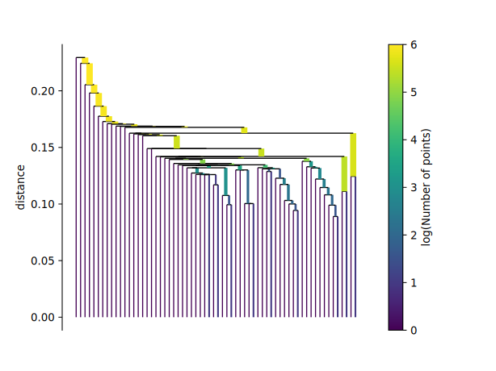
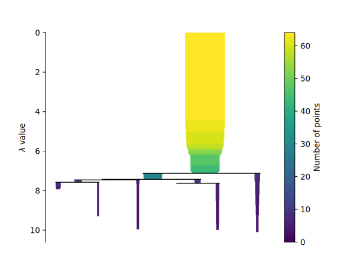
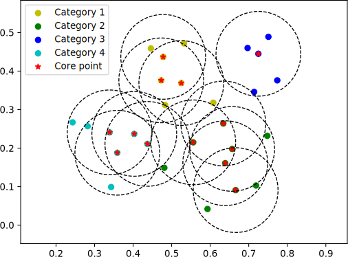

Visualization Investigations on Convolutional Neural Network
kidozh
Key Lab of Contemporary Design and Integrated Manufacturing Technology, Northwestern Polytechnical University
We develop an approach to visualize how CNN works during predicting result from non-structural data like signal
Key to quantify deep learning strategy from complicated data is dimensionality reduction and topology analysis. To demonstrate working details of CNN model, single-machining and transfer learning model is set as an target for visualization.
READ OUR PAPER (Simplified Chinese) SOURCE CODE MORE EXAMPLE

T-SNE dimensionality reduction
First of all, because of deep learning model's design, dimension of both tensor and its corresponding kernel weight is quite high. To reduce computation cost and keep data structure, a proper method is vital for topology analysis.
The redundancy of deep learning kernel always lead to tons of the same features. After dimensionality reduction, those feature kernel which shares similar weights will be recognized as one feature kernel.
A connected graph mapping features
Because the redundancy of model design, there will be some kernels sharing the same feature. In order to correctly show this relationship, a DBSCAN and its extension method have been used to demonstrate the bond in the similar features and different features distribution in tensor space.
By changing bond threshold, different features' distribution and their family can be clarified. In uniting and separating features, key point of each features is determined. To show this process, single link tree and its condensed type is drawn to illustrate features' relationship.

Single linkage tree of the 1st layer of CNN model

Condensed tree of the 1st layer of CNN model

Topology analysis of CNN model
Key point of feature is core of DBSCAN approach. In this method, identifying key features and its family is top priority. By simplifying connected graph which is generated by DBSCAN with core and other non-clustering point, the picture is able to demonstrate the actual relationship between every feature in macroscopic view.
Using line to connect core points sharing one or more point can show the kinship between two core points. After that, a graph made by core points and their connected line is given. By connected line, we could infer that there is a similarity between two core points. By distance between points, it is vivid to show the difference in tensor space. In the graph, the features relationship are represented by core points and their bonding with another.
There are some live topology analysis(TA) you could try on this browser. Time to see actual topology analysis of our monitoring model!
physical-wide screen recommended.
Options
How to use?
To make your mouse hover at any point(means core point in DBSCAN principle), the left panel will tell which and how much points make it up. The weights matrix is dyed with gray scaled color. The whiter, the greater corresponding number of matrix is. From the pictures, it's easy to easy which part CNN focus in its receptive field.
The topology graph always contains ring or cluster architecture, which demonstrates the redundant design in kernel.